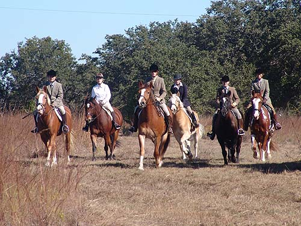

Niles at Butterfield Jessica wanted to come out with the hunt
group again, so this time I offered her
Niles.
She'd ridden him at the house a couple
of times,
but they had more fun out in the country
than working
on silly things like leads in the arena.
With Nero. Jessica and Niles had been
working in the arena on softening to the bit. She said out on the trail
he'd listen and give when she asked.
Jessica is a good size for Niles,
and vice versa.
A shot with my other horses. Angel
is no longer mine, but the rest are.
Heading out.
The grass is really tall this year.
Niles tended to stay at the back.
He's a forward little guy, but Jessica was a guest, and she stayed at the
back of the group to see how things work.
Niles fit in well with the fall color.

Trotting as a group.
Heading over the dam.
Posing in front of the water.
Going back over the dam we reversed
the field, so Niles got to lead.
They enjoyed their ride, and Niles
can't wait to get back out.